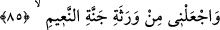

Dünyada eseri ahiret gününe kadar sürecek insanlar arasında bana güzel bir mertebe
ve güzel bir nam nasîb et.
İşte İbrâhim (a.s.)’ın bu duâsından dolayı onu sevmeyen ve övmeyen bir ümmet
yoktur. Onu sevmeleriyle isteği mertebe ve övmeleriyle de iyilikle anılması hâsıl
olmuştur.
Dillerin benim için doğru/iyi şeyler söylemesini lutfet. Yani, sonradan gelecek ümmet
arasında iyi adla anılmamı murad et. Benden sonra gelecek insanların dilinde adım
iyilik ve şöhretle anılsın.
“Bana, sonra gelecekler içinde,” benden sonraki ümmetler arasında, demektir.
Güzel övgü ve insanlar arasında genel kabûl “lisan/dil” ile tâbir edilmiştir. Çünkü dil
onun isminin duyulmasına ve meşhur olmasına sebep olmuştur. Âhir zamana kadar
insanların dilinde zikr-i cemîlin (güzel olarak anılmak) kalması, büyük bir devlettir. Bu,
Allah’ın İbrâhim (a.s.)’dan râzı olduğuna ve onu sevdiğine delildir. Allah Teâlâ bir kulu
sevince, gök ve yer ehline onun muhabbetini ilkâ eder. Bütün mahlûkat, hatta denizdeki
balıklar, havadaki kuşlar bile onu severler.
İbn Atâ (bu âyetin tefsîrinde) der ki: “Beni övme ve hakkımda hüsn-i şehâdet
konusunda ümmet-i Muhammed’in dilini çöz. Çünkü sen onları, şâhidliği makbul bir
ümmet kıldın.”
Sehl ise şöyle der: “Allah’ım, beni bütün ümmetler ve dinler arasında övülmekle
rızıklandır.”
Bu aslında güzel fiil, iyi ahlâk ve yumuşak dil ile husûle gelir. Bütün bunlar iyilikle
anılmanın sebepleridir. Sonra gelenler de bu hususlarda İbrâhim (a.s.)’a tâbi olurlar.
Böylece o hem kendi ecrini alır, hem de kendisine tâbi olanların ecrinin mislini alır.
85. Beni, Naîm cennetinin vârislerinden kıl.
“Beni,” âhirette “Naîm cennetinin vârislerinden” bir vâris “kıl.”
Allah Teâlâ, amel eden kulunun amelinin fânî olmasından sonra hak kazanacağı
cenneti, vârisin mûrisin/miras bırakanın vefâtından sonra hak kazandığı mîrasa
benzetmiş, cennete “mirâs”, onu hak etmeye “verâset”, âmil kuluna da “vâris” adını
vermiştir.
Yâni, vârisin mûrisinin/kendisine miras bırakanın malını hak ettiği ve ondan
faydalandığı gibi beni, Naîm cennetini hak edenlerden ve onun nimetlerinden
faydalananlardan kıl.
“Naîm cenneti”nin anlamı nimet dolu bahçe demektir.
Âyette cennet talebinin Hakk’ı talebe mâni olmadığına ve cennet talebini terk etmenin
rubûbiyyete karşı büyüklenmek olduğuna işâret vardır.